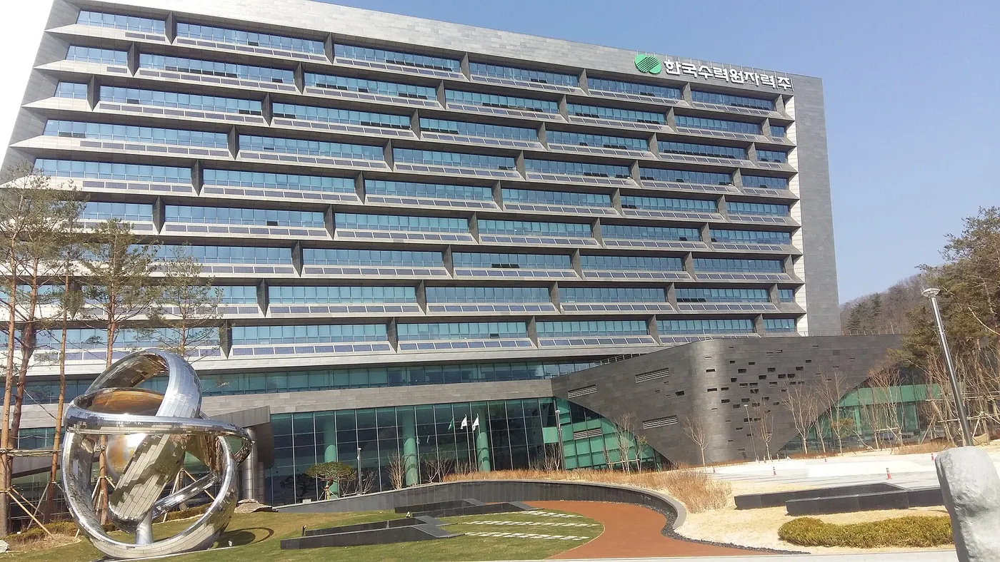
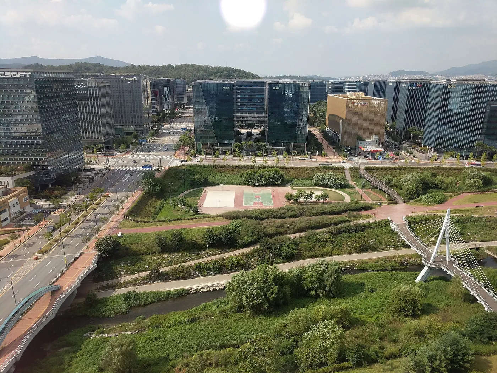
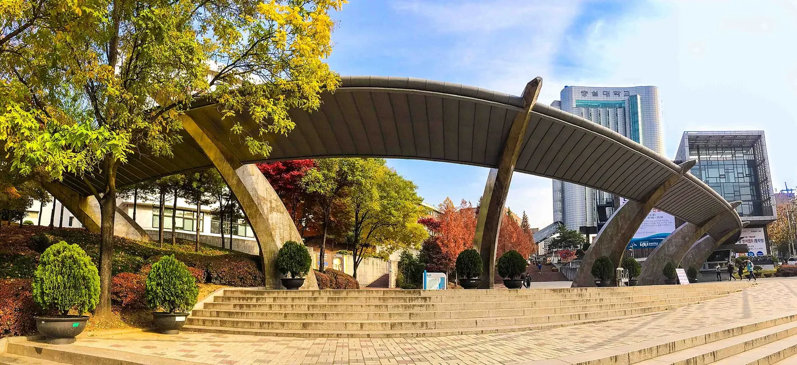
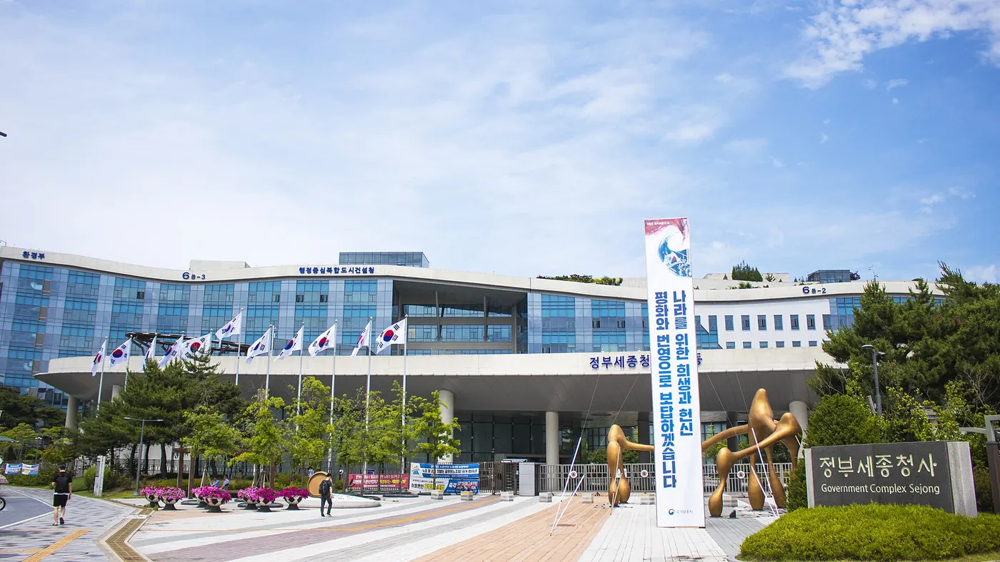

표준 현장실습학기제
회사에서 일하면서 학점을 받는 대학 수업. 얼마를 받고, 어떻게 신청하고, 언제 무엇을 하면 되는지.
현장실습 수첩 · 2026년 10월 29일 기준
회사가 교실이 되는 수업
교육부 고시 「대학생 현장실습학기제 운영규정」(제2025-36호)은 현장실습을 일자리가 아닌 학교 밖으로 연장된 수업으로 봅니다.
학점을 받는다
수강신청, 출석, 평가를 거칩니다. 이미 일하는 회사에서는 인정 안 돼요.
실습비를 받는다
회사가 현금으로 직접 줍니다. 밥이나 기숙사는 계산에 넣지 않아요.
보호받는다
보험 두 개와 시간 상한이 있고, 문제가 생기면 학교가 실습을 멈춥니다.
표준형과 자율형
가르는 기준은 교육시간 비율, 곧 일 대신 배우는 시간이 전체에서 차지하는 몫입니다.
표준 현장실습
- 최소 1개월, 주 40시간 이내
- 교육부 표준 서식으로 협약
- 실습비 최저선이 꼭 지켜짐
- 회사가 짠 프로그램(실습기관 주도형)도 가능
자율 현장실습
- 기간과 시간을 학교가 정함
- 학교별 서식
- 까다로운 조건을 다 갖추면 무급도 가능
- 학교가 짠 프로그램만
어느 쪽이든 모집과 선발은 학교 센터를 거칩니다. 내가 직접 구했거나 회사가 학교 밖에서 따로 뽑은 실습은 인정되지 않아요.
얼마를 받나
최저선 = 최저시급 × 한 달 실습시간 × (1 − 교육시간 비율). 내 비율은 운영계획서에 적혀 있어요.
학교 → 회사: 회사가 최저임금 100%를 주면 25%(월 539,220원)를 돌려주는 대학이 많아요
숭실대 2학기 16주 장학금 120만 원 · 요건을 갖춘 실습비는 세금을 떼지 않음(기재부 해석, 2021) · 연장·야간은 50% 이상 더
신청부터 학점까지
대학마다 순서는 거의 같습니다.
- 실습 약 두 달 전
지원
등록된 회사 고르기 → 학교 시스템에서 지원 → 서류·면접
- 실습 1~2주 전
준비
수강신청·수강료 → 사전교육 → 3자 협약 → 보험 확인
- 실습 기간
실습
주 40시간 이내 → 주간보고서·중간점검
- 끝난 뒤
학점
결과보고서·만족도조사 → P/F 평가
학점은 실제 출근한 날 수로 셉니다. 주말·공휴일·연차·병가는 빠져요.
실습생으로서 내 권리
어기면 학교에 알리세요. 학교가 시정을 요청하거나 실습을 멈추고 복귀시킵니다.
- 주 40시간, 하루 8시간 이내
- 연장은 동의할 때만, 주 5시간까지
- 밤 10시~아침 6시 금지
- 하루 1시간 휴게, 주 1일 유급휴일
- 회사 산재보험
- 학교 상해보험
- 하나라도 없으면 학점 인정 안 됨
- 운영계획서에 없는 일은 시킬 수 없음
- 회사 규정으로 징계할 수 없음
- 재택실습은 기간의 25% 이하
- 협약서에 소유권 조항이 없음
- 포트폴리오 공개 범위는 시작 전에 글로 정하기
공기업 vs 사기업
공기업은 정부가 주인인 회사입니다. 2026년 기준 약 30곳이에요.




정부. 법으로 지정되고 경영평가를 받음
주인오너·주주
잡알리오 공고 → 블라인드 서류 → NCS 필기 → 면접
뽑는 법회사마다. IT·게임은 코딩 테스트, 포트폴리오, 과제
전산 운영, 사업 관리 비중이 큼
IT 직원의 일서비스를 직접 개발
지방 혁신도시 본사가 많음 (예: KISA·한전 나주)
근무지IT·게임은 판교·서울에 몰려 있음
정년까지 안정, 호봉 따라 오름
돈·안정회사마다 차이 큼, 성과급과 이직
실습·인턴으로 보면
청년인턴은 학교 현장실습이 아니라 기관과 직접 맺는 근로계약입니다.
| 학교 현장실습 | 공기업 체험형 청년인턴 | 채용형 인턴 | |
|---|---|---|---|
| 신분 | 실습생(학생) | 기간제 근로자, 4대보험 | 근로자 |
| 학점 | 있음 | 없음 | 없음 |
| 한 달 돈 | 162~194만 원 이상교육시간 비율에 따라 | 약 216~222만 원반일제는 105만 원 (KISA) | 기관·회사마다 |
| 기간 | 4주~16주 | 보통 6개월 | 몇 달 |
| 지원 | 학교 센터 | 잡알리오·기관 홈페이지 | 기관·회사 홈페이지 |
| 끝나면 | 학점, 경험 | 그 기관 정규직 서류 가점이 있는 곳도KISA: 수료 1점, 우수 3점 | 평가 통과하면 정규직 |
정규직으로 이어지는 인턴은 드묾
2026년 1분기 채용형 인턴을 뽑은 공기업은 30곳 중 7곳 (코레일 109명, 한전 23명 등)
대신 체험형은 많음
- 2026년 공공기관 청년인턴 2.4만 명, 체험형이 더 많음
- 만 34세 이하, 학력 무관이 보통
- 대부분 평일 8시간이라 학기 중엔 휴학해야 함
공기업에서 학점을 받으려면 그 기관이 학교 현장실습 목록에 있어야 합니다.
내 입장에서는
AI 응용 개발·게임이 1·2순위라면 기준은 하나, 코드를 짤 기회가 어디 더 많은가.
- 1사기업 현장실습3학년
학점과 실습비를 받으며 개발 경력을 만든다
- 2사기업 채용연계형 인턴4학년
크래프톤·넷마블처럼 잘하면 정직원이 되는 입구
- 3공기업 체험형 청년인턴휴학 중
학점 없고 일은 자료 조사·사업 지원 위주. 월급과 4대보험이 있어 군 전후 휴학 공백 메우기용
나라면?
전공과 처지에 따라 궁금한 게 다릅니다.
내가 할 일
체크하면 이 브라우저에 남아요.
숭실대 학생이라면
2026학년도 현장실습 안내문과 리플렛 원문을 기준으로 정리했습니다.

1학년 2학기부터의 길
휴학 없이 다닐 때
- 1지금 여기1학년슈패스에서 현장실습 서류·면접 특강 듣기
- 22학년 여름캠퍼스타운 스타트업 인턴십 지원 가능 (6주, 3학점)
- 33학년4학기 이수로 표준 현장실습 자격. 여름·겨울 4~8주, ICT 인턴십 4개월
- 43~4학년 학기 중12~16주 실습, 최대 15학점. 졸업 학기는 제외
표준 현장실습
- 자격
- 3~4학년 재학생 중 정규 4학기 이상 이수. 직전 학기 휴학생, 그 학기 졸업예정자는 안 됨
- 모집
- 1년에 세 번, 지원은 열흘 남짓 (2026년: 5월 4~14일, 7월 9~20일, 11월 2~12일)
- 학점
- 여름·겨울: 4주 이상 일반선택 3학점, 8주 이상 3~6학점 (재학 중 2회까지)
학기: 12주 이상 최대 12학점, 16주 이상 최대 15학점, 그중 전공선택 최대 6학점 - 지원금
- 학기 16주 120만 원, 12주 이상 90만 원 · 겨울은 낸 수업료를 돌려받음
- 주의
- 선발되면 포기할 수 없음 · 교내 다른 현장실습·창업 프로그램과 중복 지원 불가 · 주차보고서 매주 200자 이상
- 신청
- WESS · 현장실습지원센터 학생회관 501호, 02-820-0878
WESS에서 하는 순서
- LMS 사전교육 1 (지원 전 필수)
- 서약서·이력서·자기소개서
- 회사 운영계획서 보고 지원
- 서류·면접
- 사전교육 2 (Zoom 2회), 수업료 납부
- 3자 협약
- 실습, 주차보고서, 기관 평가
전공선택으로 인정받으려면 학과장 승인 신청서를 기한 안에 따로 냅니다. AI대학(AI소프트웨어학부 등) 학부별 인정 기준은 학과 사무실에 물어보세요.
컴퓨터·AI 전공이 함께 볼 다른 길
ICT 학점연계 프로젝트 인턴십
- 과기정통부 사업, 4개월 (3~6월, 9~12월)
- 4~5학기 이수한 정보통신 관련 전공생 (AI대학 학부가 포함되는지는 학과에 확인)
- 정부가 회사에 월 120만 원 지원, 학생은 최저임금 이상
- 대학을 통해 신청
캠퍼스타운 스타트업 인턴십
- 창업지원단, 2~4학년 (2개 학기 이수)
- 여름 6주 240시간, 210만 원 (세전)
- 계절학기 3학점 P/F
- 2026년 모집 5월 14~21일
창업 실습
- 창업동아리실습: 창업교과목 3학점 이수 후, 학기당 3학점
- 창업기업실습: 창업한 대표자, 학기당 6학점
- 학과장 승인, P/F
2학년 겨울방학(4학기를 막 마친 때)에 표준 현장실습을 지원할 수 있는지는 안내문에 없어서 센터에 물어봐야 합니다. ICT 인턴십의 2026년 숭실대 모집 공지는 찾지 못했습니다.
무급 실습에서 실습처 부족으로
2021년 개정으로 무급 실습은 줄었지만, 비용이 부담스러운 작은 회사들이 빠지며 참여도 줄었습니다.
- 10명 중 4명은 실습비를 못 받음수령률 59.6% (2020 국정감사)
- 운영규정 전부개정표준·자율 구분, 실습비와 보험 의무화
- 참여 기업 약 2.8만 곳2019년 약 7.6만 곳에서 줄어듦
- 인권위, 자율형 관리 강화 의견산재보험 가입률 표준형 98.8%, 자율형 65.8% (2022)
- 현행 운영규정 시행교육부고시 제2025-36호
현장실습 참여 학생 수
교수신문 기고(2026.10.6.) 수치, 원출처 미표기
2027년, 대학생 첫 경력 프로젝트
교육부가 2026년 8월 28일 발표했습니다. 2027년 3월 시작이 목표이고, 예산은 12월 국회에서 확정돼요.

실습비 월 230만 원을 나눠 냄
규모
- 약 6만 명
- 약 5개월, 학점 취득
- 2029년까지
지금과 비교
- 최저선 162만 → 230만 원
- 회사 부담 → 115만 원
- 4주 위주 → 5개월
미정 발표 전
- 대상 학년, 신청 방법
- 지원비 지급 경로
- 지금 제도와의 관계
아직 확인하지 못한 것
학교 현장실습지원센터에 묻는 게 가장 정확해요.
- 2025년 12월 개정에서 바뀐 조항
- 실습비가 국가장학금·건강보험 피부양자에 주는 영향
- 실습 경쟁률과 정규직 전환율
- 첫 경력 프로젝트 대상 학년
- 숭실대: 2학년 겨울 지원 가능 여부, AI대학 학부별 전공 인정 기준
출처 28곳 보기
- 국가법령정보센터 · 대학생 현장실습학기제 운영규정 (교육부고시 제2025-36호)
- 고시 전문 (한림대 게시본)
- 숭실대 WESS
- 숭실대 2026-겨울학기 현장실습학기제 학생 참여 안내 (안내문·리플렛)
- ICT 학점연계 프로젝트 인턴십
- 숭실대 공지사항 · 2026 현장실습학기제 학생 참여 안내
- 인천대 2026-2학기 현장실습 안내
- 고려대 경영대 현장실습 공지
- 전남대 2026 하계 운영계획
- 울산대 2026-2학기 현장실습 안내
- 전북대 2026 현장실습 모집 안내
- 표준 운영서식 · 협약서 (서경대 배포본)
- 2026 한국 유학 가이드북
- 기획재정부 소득세제과-153 (2021) 해석
- 인하대학신문 (2025.9) · 인문계 전공학점
- 전남대 공지 (2026.1) · HD현대 채용연계형
- 대학신문 (2020.10.7) · 2019 실습지원비 수령률
- 교수신문 기고 (2026.10.6) · 참여 추이
- 국가인권위원회 (2024.10) · 자율 현장실습 의견
- 머니투데이 (2026.8.28) · 첫 경력 프로젝트
- 이슈온 · 첫 경력 프로젝트 쟁점
- 서플 · 첫 경력 프로젝트
- 싸이웍스 · WESS 2.0
- 파이낸셜뉴스 (2026.1.27) · 2026 공공기관 채용·청년인턴 2.4만 명
- 청년일보 (2026.6.18) · 공기업 채용형 인턴 30곳 중 7곳 (알리오)
- 한국인터넷진흥원 2025 체험형 청년인턴 공고 · 반일제, 수료 가점
- 스포츠경향 (2026.5.5) · 한국마사회 체험형 청년인턴 6개월
- 한국수력원자력 2026 체험형 청년인턴 (월 222만 원) · 한국연구재단 (월 216만 원)